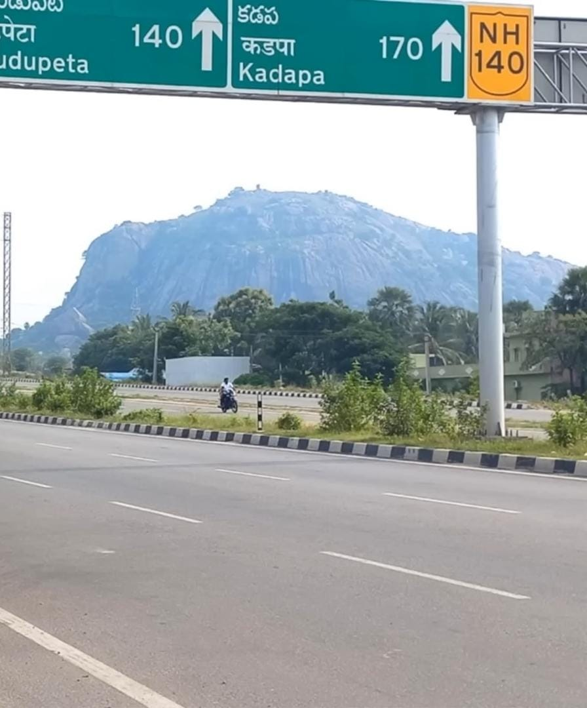
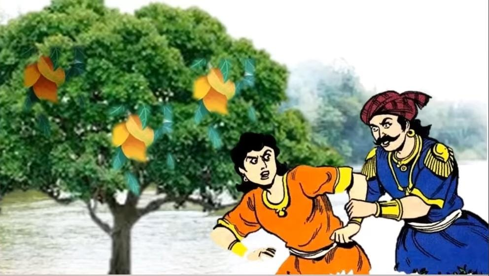

1. To reach Kanipakam, you'll need to turn from the main road onto NH140.
While traveling along the main road, you'll find the turn for NH140 that leads to Kanipakam.
As soon as you make the turn, stop at the NH140 board and look ahead to find the first special attraction.
There you'll find a hill that resembles the exact shape of an elephant.
It's a natural rock formation, appearing as if Ganapati is inviting us into his Kshetra.
The hill resembles an elephant, and all its features forehead, trunk, and legs are clearly visible.

Lord Vinayaka inviting us to Kanipakam
2. The second specialty is when you approach the temple, you'll park your vehicle in a designated area.
From there, you'll see a small overbridge, under which flows a powerful river named Bahuda River.
Normally, this river remains dry, but if there is water in it, make sure to take a bath or at least sprinkle some water on your head and clean your hands and feet.
The Puranas narrate a story explaining the power of this river.
Two brothers named Shankh and Likhith were once passing through this area, and Likhith felt hungry.
There, Likhith saw some mangoes on a tree in a garden and felt tempted to eat them.
Shankh, his brother, advised against it, stating that taking them without permission would be stealing.
Likhith ate the mangoes, thinking no one was watching. Unfortunately, the gardener caught him in the act, leading to an argument with no resolution.
They were then brought before the king, but there was no concrete evidence of the incident.
The king turned to Shankh for answers, as he was present during the incident.
Shankh faced a moral dilemma, torn between loyalty to his brother and the call for righteousness. But, he confessed that his brother indeed ate the mangoes.
This angered the king, who ordered Likhith's hands to be cut off as punishment.
Overwhelmed with guilt and sorrow, Shankh couldn't bear the weight of his brother's situation and jumped into the nearby river, sacrificing his own life.
Then, the Goddess of righteousness (Dharma Devatha) appeared before Shankh, expressing her delight in his honesty and integrity.
She instructed him to make his brother immerse himself in the river. Likhith bathed in the waters, and miraculously, his severed hands were restored.
The river henceforth came to be known as the Bahuda River, meaning "the river that bestowed arms."
People believe that if righteous ones facing challenges bathe in this sacred river, their problems will be resolved because of Dharma Devatha.
Therefore, take a bath in this river to experience the second specialty of Kanipakam.

Bahuda River The story of Shankh and Likhith
« Previous
Next »